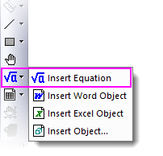

FAQ-856 Warum fügt Origin die Gleichung nicht in das Diagramm ein?
Fail-to-Insert-Euation
Letztes Update: 29.03.2023
 |
Origin 2023b enthält ein SVG-basiertes LaTeX-Gleichungstool. Dieses neue Hilfsmittel LaTeX-Gleichung einfügen erfordert kein manuelles Installieren von zusätzlichen Bibliotheken oder Softwares durch die Anwender. Um Probleme, die durch die App LaTeX entstehen, loszuwerden, ist ein Upgrade auf Version 2023b oder höher sehr empfehlenswert, um das Hilfsmittel LaTeX-Gleichung einfügen auszuprobieren. Weitere Informationen finden Sie in diesem Dokument.

|
Falls Sie weiterhin mit der App LaTeX arbeiten möchten, lesen Sie hier bitte weiter.
Für Origin 2023 und ältere Versionen:
Das Hilfsmittel Gleichung einfügen erfordert die Installation des Gleichungseditors, der in früheren Versionen von Microsoft Word eingeschlossen war. Falls Sie bei dem Versuch, das Hilfsmittel Gleichung einfügen in Origin zu öffnen, folgendem Fehler begegnen:
Origin bietet eine App LaTeX zum Bearbeiten von Gleichungen.
Sie erfordert die Installation der Applikationen MiKTeX und OAutotrace.
Möchten Sie sie verwenden?
Weitere Einzelheiten finden Sie der Seite LaTeX. (Hier wird "LaTeX" als Link angezeigt: https://www.originlab.com/FileExchange/details.aspx?fid=221)
Sie können die Systemvariable @IEE = 0 setzen, um zurückzuwechseln.
Falls Sie die das Public Update (PU) von Januar 2018 installiert haben
Der Gleichungseditor (Microsoft Equation 3.0) wurde aus allen Versionen der Microsoft-Office-Produkte entfernt. Um das Hilfsmittel Gleichung einfügen in Origin zu verwenden, ziehen Sie bitte in Betracht, die in der Meldung erwähnte App LaTex oder die Drittanbieter-App MathType zu verwenden.
Die kostenlose App LaTex verwenden
- Wenn ein Diagramm aktiv ist, klicken Sie auf die Schaltfläche Gleichung einfügen auf der Symbolleiste Hilfsmittel.
- Klicken Sie auf Ja, wenn Sie den Dialog gesehen haben.

- Die App und die zwei Applikationen Mikitex und OAutotrace werden automatisch installiert. Sobald sie installiert sind, starten Sie Origin erneut.
- Wenn ein Diagramm aktiv ist, klicken Sie auf die Schaltfläche Gleichung einfügen auf der Symbolleiste Hilfsmittel.
Mathtype verwenden (nicht kostenlos)
- Installieren Sie im Vorab MathType.
- Wenn ein Diagramm aktiv ist, klicken Sie auf die Schaltfläche Gleichung einfügen auf der Symbolleiste Hilfsmittel.
- Klicken Sie auf Nein, wenn Sie den Dialog gesehen haben.
| Hinweise: Um das Verhalten der Schaltfläche Gleichung einfügen zu bestimmen, setzen Sie @IEE = 0, um den Erinnerungsdialog umzuschalten. |
Schlüsselwörter:Microsoft, Word, PowerPoint, 64Bit